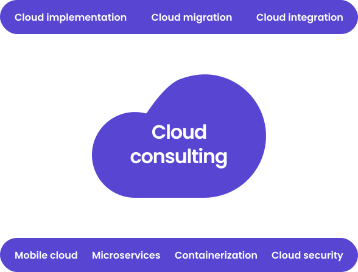
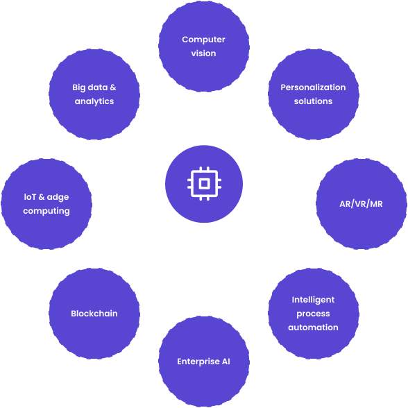

Key directions of software consulting
Since entering the software development market in 1998, Itransition has been guiding businesses toward more effective operations, services, and products with tailored software solutions.
As a software consulting company, Itransition sees its mission in helping companies across industries create optimal digital environments aligned with their technical capacity, business requirements, employees’ needs, and customers’ expectations.
-
Software implementation strategy
We help companies draw up their short- and long-term software implementation roadmaps. We advocate reasonable software investment while ensuring smooth business transformation through custom solutions and their safe adoption.
-
Technology advisory services
Itransition’s software consultants assist our customers in selecting the right technology stacks for their solutions. Be it a programming language or a ready-to-use platform, we help businesses review technologies’ pros and cons before starting their projects.
-
Business solution consulting
When companies have doubts choosing the right software for their challenges, we provide business solution consulting. Together, we decide on the system to implement (CRM, ERP, DMS, CMS, etc.) as well as the development and customization scope.
Technology consulting: our approach
Our team supports businesses at different stages of their software development and implementation projects. We have the skills and expertise to shape early concepts into detailed solution specifications.
We also manage full-cycle development of enterprise systems of any complexity and integrate them smoothly into business processes and IT infrastructures.
-
1
From idea to technology
We support enthusiastic companies with new ideas about their business digitalization. As a technology consulting company, we assess the viability of the initial idea and consider the most optimal tech stack for its realization.
-
2
From idea to technology
We support enthusiastic companies with new ideas about their business digitalization. As a technology consulting company, we assess the viability of the initial idea and consider the most optimal tech stack for its realization.
-
3
From idea to technology
We support enthusiastic companies with new ideas about their business digitalization. As a technology consulting company, we assess the viability of the initial idea and consider the most optimal tech stack for its realization.
Are you looking for expert technology consultants?
Let them assess your project now
Driven by results
Our customers’ success stories testify to our IT consulting achievements. We strive to translate our consulting and development effort into real business outcomes, such as better system performance, more active users, or reduced TCO.
-
21%
sales growth
Digital transformation of a UK furniture manufacturer
Itransition’s team of 100+ software engineers and technology consultants managed a major digital transformation of a large UK furniture manufacturer. Owing to the delivered solutions, the customer increased their sales by 21% while extending their business to the premium market segment.
-
+20,000
active users
An investment management suite for a US provider
Itransition helped one of the largest US providers of online investment solutions to design and implement a comprehensive investment management suite for individual investors. The suite gained a great popularity among its target audience that grew from 10,000 to over 30,000 users, with the total value of managed portfolios of $20 billion.
-
30%
lower technical debt
Software ecosystem revamp for a retail chain
By getting a sophisticated software ecosystem back on the rails, Itransition’s experts helped the owner of a retail chain to cut 30% of their technical debt caused by critical inconsistencies in their retail software, including indexing and search errors, recurring 404 errors, and cache failures.
Do you want your software investment to bring tangible results?
Learn how from our consultants
Transforming your tech ecosystem
-
Cloud computing
We support the global shift to cloud technologies through our specialized software consulting services. Our essential goal is to elaborate step-by-step cloud adoption strategies and ensure trouble-free implementation of cloud solutions in specific business contexts.
Our competences include consulting on cloud platforms, their deployment with the necessary infrastructure modifications, cloud solution customization, and development of custom cloud apps from the ground up.
- 
- 
-
Smart technologies
We help businesses gain new competitive advantages with solutions based on the latest innovations.
We advocate a gradual transition to smart solutions and incorporate them seamlessly into existing IT environments.
Why technology consulting
-
Expertise rooted in practice
The competencies and skills we have today are the result of over two decades of software development practice. Our portfolio constantly expands with new projects and success stories from our customers, and we stay open to new challenges.
-
Cross-disciplinary talent pool
Partnering with Itransition, you can build your project team choosing from over 3,000+ software engineers, solution architects, business analysts, testing experts, and project managers.
-
Industry knowledge
We manage software consulting and development projects across multiple industries. Our team includes experienced business analysts who can effectively translate industry requirements to the language of technical specifications.
-
Partnership with global software vendors
Itransition is a long-term partner of the world’s leading technology vendors, including Microsoft, Salesforce, Atlassian, Amazon, and more. Our specialists go through regular certification to validate their knowledge of providers’ requirements and best practices.
-
Adherence to international security & quality standards
Itransition follows recognized security and compliance standards. We ensure secure project workflows and help businesses implement software aligned with specific industry guidelines on software configuration, data storage and processing.
Are you looking for expert technology consultants?
Let them assess your project now
Service
Complete service scope
-

Our software development company delivers corporate and consumer applications based on our profound understanding of technologies and the markets they operate in.
-
Our software development company delivers corporate and consumer applications based on our profound understanding of technologies and the markets they operate in.
-
Our software development company delivers corporate and consumer applications based on our profound understanding of technologies and the markets they operate in.
-
Our software development company delivers corporate and consumer applications based on our profound understanding of technologies and the markets they operate in.
Case
Case studies
Affiliate network portal for Expedia
Business Process Management
Stock trading software development for TradeSmith
Digital Enterprise
Stock trading software development for TradeSmith
Digital Enterprise
Stock trading software development for TradeSmith
Digital Enterprise